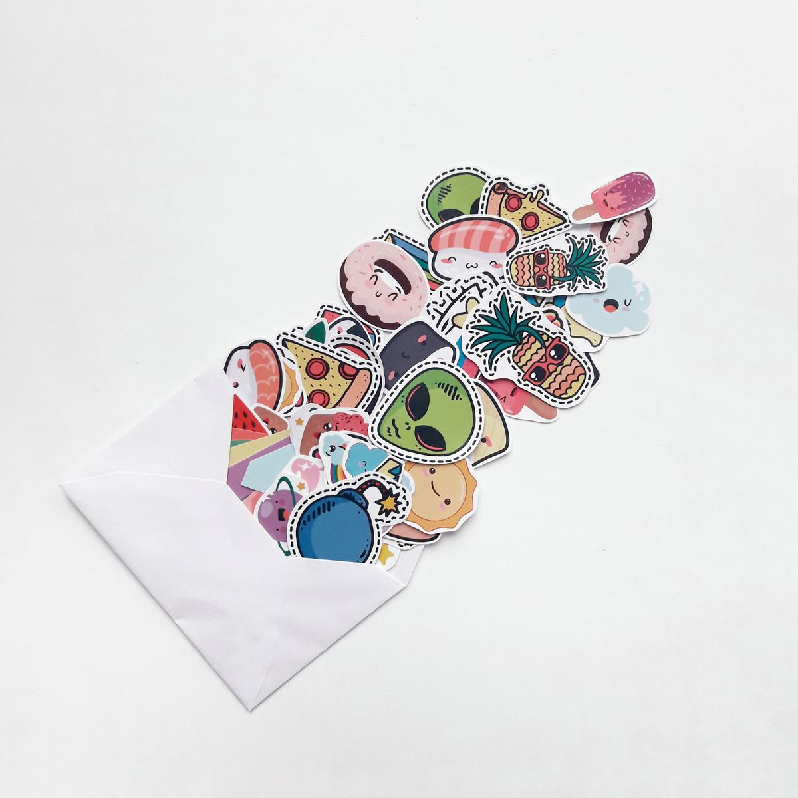

Chat WhatsApp yang rame stiker sendiri itu rasanya beda. Kabar baiknya, kamu sekarang bisa bikin stiker dari fotomu langsung di dalam aplikasi WhatsApp, gratis dan tanpa instal aplikasi tambahan. Syaratnya cuma satu: WhatsApp kamu sudah versi terbaru.
Stiker dari foto sendiri itu enak dipakai buat ekspresi sehari-hari: wajah ketawa buat respons lucu, foto kucing buat sapaan pagi, sampai ekspresi kaget buat momen panik. Karena dibuat dari fotomu sendiri, stikernya terasa lebih personal dibanding stiker bawaan yang dipakai semua orang.

Cara Bikin Stiker Lewat Fitur Bawaan WhatsApp
WhatsApp punya editor stiker bawaan di versi terbarunya, baik di Android maupun iPhone, per November 2026. Kamu tidak perlu lagi menginstal aplikasi pihak ketiga untuk stiker sederhana. Begini caranya.
- Perbarui dulu aplikasi WhatsApp lewat Google Play Store atau App Store, karena fitur ini hanya ada di versi yang lebih baru.
- Buka salah satu chat, lalu ketuk ikon emoji di kolom tulis pesan dan pindah ke tab Stiker.
- Ketuk tombol Buat (Create) kalau tombolnya sudah muncul di tab stiker.
- Pilih foto dari galeri HP kamu, atau jepret foto baru langsung pakai kamera.
- WhatsApp otomatis mengenali objek utama di foto dan memotong latar belakangnya.
- Tambahkan teks, emoji, coretan, atau stiker lain kalau mau. Secukupnya saja supaya stikernya tetap jelas.
- Ketuk Kirim. Selesai. Stiker langsung tersimpan di koleksimu dan bisa dipakai ulang di chat mana pun.
Satu hal yang bikin cara ini enak: semua dikerjakan dalam satu aplikasi. Kamu tidak perlu pindah-pindah aplikasi, tidak perlu daftar akun baru, dan hasil editnya bisa langsung dikirim begitu jadi.
Fitur yang sama juga tersedia di WhatsApp Web dan WhatsApp Desktop buat kamu yang lebih nyaman mengedit di layar komputer. Stiker yang kamu buat tersinkronisasi ke akun WhatsApp, jadi bisa dipakai di perangkat lain yang terhubung tanpa bikin ulang.
Kalau Tombol Buat Stiker Tidak Muncul
Fitur ini dirilis secara bertahap, jadi wajar kalau sebagian HP belum kebagian meski WhatsApp sudah diperbarui. Coba langkah ini: perbarui WhatsApp sekali lagi, tutup lalu buka ulang aplikasinya, bersihkan cache WhatsApp di Android, pastikan ruang penyimpanan masih lega, dan kalau perlu restart HP.
Kalau semuanya sudah dicoba tapi tombolnya tetap tidak ada, pakai dulu aplikasi pembuat stiker dari toko aplikasi resmi sebagai jalan sementara, misalnya Sticker.ly atau Sticker Maker. Nanti kalau fiturnya sudah mendarat di HP kamu, beralih ke cara bawaan.
Alternatif: Bikin Banyak Stiker Sekaligus Lewat Sticker.ly
Editor bawaan WhatsApp memang praktis, tapi fiturnya sederhana. Kalau kamu mau bikin banyak stiker sekaligus dalam satu paket bertema, atau mau bikin stiker animasi, aplikasi khusus masih lebih enak dipakai.
Sticker.ly salah satu yang paling populer karena tersedia di Android dan iPhone. Caranya: pilih foto, hapus latar belakangnya secara otomatis atau manual, tambahkan tulisan dan emoji, lalu buat paket stiker baru dan pilih opsi Add to WhatsApp. Dalam beberapa detik stikernya langsung muncul di koleksi stiker WhatsApp kamu.
Selain Sticker.ly, ada juga Wemoji dan Sticker Maker yang banyak dipakai karena fiturnya lebih fleksibel. Kamu bisa memotong objek secara manual, menghapus background dengan lebih rapi, sampai menambahkan elemen dekoratif supaya hasilnya unik. Kelebihannya, kamu bisa menyusun banyak stiker dalam satu paket sekaligus, cocok buat kumpulan stiker bertema seperti ekspresi wajahmu sendiri atau stiker komunitas.
Sekadar patokan dari WhatsApp untuk paket stiker custom: ukuran gambar 512 x 512 piksel, ukuran berkas maksimal 100 KB untuk stiker statis dan 500 KB untuk stiker animasi, serta maksimal 30 stiker dalam satu paket. Stiker yang sudah kamu punya juga bisa dikelompokkan: tekan dan tahan salah satu stiker, lalu pilih Tambah ke Paket Stiker.
Bonus kalau fiturnya tersedia di wilayahmu: WhatsApp juga punya stiker AI. Tinggal ketik deskripsi seperti kucing memakai topi ulang tahun, dan WhatsApp membuatkan beberapa pilihan stiker secara otomatis. Fitur ini masih terbatas di negara tertentu dan mendukung deskripsi berbahasa Indonesia.

Tips Foto Supaya Hasil Stiker Rapi
Kualitas stiker sangat ditentukan oleh foto aslinya. Pakai foto beresolusi tinggi dan pencahayaan yang cukup, karena foto buram bikin garis potongan jadi berantakan.
Pilih foto dengan latar belakang sederhana dan warna yang kontras dengan objeknya. Ini membantu WhatsApp mengenali objek utama dengan akurat, apalagi kalau objeknya wajah atau hewan peliharaan.
Kalau bikin stiker wajah, pakai ekspresi yang jelas: senyum, tertawa, atau terkejut. Ekspresi yang tegas bikin stiker lebih mudah dipakai di berbagai situasi chat.
Satu lagi: pakai foto asli dari kamera, bukan hasil tangkapan layar atau gambar yang sudah berkali-kali dikompresi. Gambar berukuran kecil akan kehilangan kualitas saat diperbesar, dan stikernya tampak pecah serta kurang tajam saat dikirim.
Terakhir, hias secukupnya saja. Outline putih, teks singkat, atau satu emoji bisa bikin stiker lebih jelas, tapi terlalu banyak dekorasi justru bikin gambar penuh dan susah dibaca. Dan satu hal penting: jangan pakai foto orang lain tanpa izin atau gambar berhak cipta untuk stiker yang kamu sebarkan.
Intinya, bikin stiker WhatsApp dari foto sendiri sekarang semudah bikin status. Selama WhatsApp kamu versi terbaru, semuanya bisa dikerjakan di dalam aplikasi tanpa aplikasi tambahan. Selamat berkreasi, chat kamu bakal makin hidup.
Sumber dan Info Resmi
Langkah dan detail di artikel ini merujuk ke sumber berikut, yang sudah diverifikasi isinya:
- Blog ITERA: langkah editor stiker bawaan WhatsApp, fitur dirilis bertahap, stiker tersinkronisasi ke akun, tersedia di Android, iPhone, WhatsApp Web, dan Desktop.
- JETE: editor bawaan di Android dan iPhone versi terbaru, alur Sticker.ly, spesifikasi paket stiker 512 x 512 piksel, dan stiker AI yang masih terbatas di negara tertentu.
- Portal Harian: panduan mengikuti petunjuk resmi WhatsApp, ketersediaan fitur tergantung versi aplikasi.
- Eraspace: aplikasi alternatif pembuat stiker (Sticker.ly, Wemoji, Sticker Maker) yang tersedia di toko aplikasi resmi.